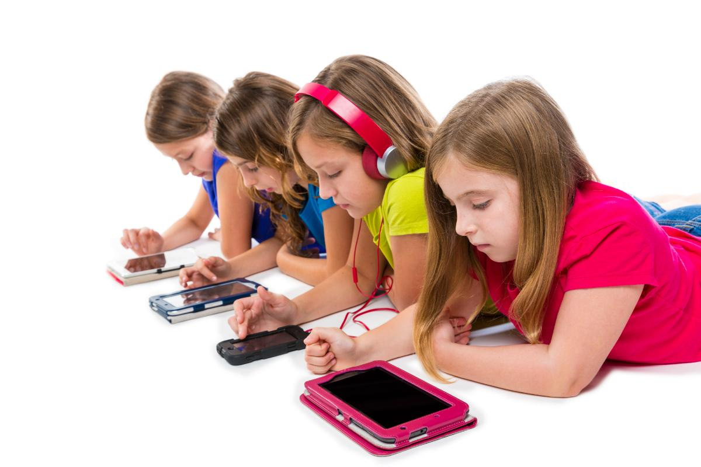

Today’s post is from Bron from the great new site Mumlyfe, which is a parenting site for mums of older kids. I have known Bron for many years and she has a fabulous philosophy on parenting and family life.
Bron has just published a super useful e-book Screen Freedom. It isn’t a lecture on how you should handle screens with your kids and expecting them to have no screen time. Bron knows that screens are a huge part of our kids lives, but also knows that kids need guidance and help to manage their screen time and I can highly recommend her e-book if you are looking for ideas to encourage the kids to spend more time off their screens – especially during school holidays!
There’s a bit of hysteria developing out there around “gaming addiction” and kids playing Fortnite. I use quote marks around “gaming addiction” because despite WHO recently classifying gaming disorder as a mental disease, many experts and scholars don’t agree that gaming addiction is a thing.
They clearly haven’t spoken to many parents. Anecdotally, more and more of us are realising that our kids would rather be playing video games, or watching YouTube videos at the expense of everything else. Today’s online world is entirely immersive for our children and it’s all too easy for them to get sucked into the vortex.
Life on a screen
The thing is, whether you think your child has a problem or not, it’s always a good idea to limit the amount of time kids spend gaming, or generally online or on screens. The online world is an enticing, exciting place to be and the more we play there, the more real life can feel slow and dull by comparison.
Life really does take place on a screen for kids these days – they socialise there, learn there and are entertained there. What’s ‘real world’ and ‘online world’ is so often blurred together that it’s unrealistic and unfair to expect our kids to separate the two. What concerns me, though, is that our kids are becoming too reliant on being entertained by screens and not reliant enough on their own creativity and inventiveness. So many kids haven’t got a clue what to do with themselves away from screens and I think that points to some concerning gaps in their ongoing capabilities and sense of self-worth. Why it’s so hard to limit screen time There’s often a big backlash against parents from judgey types who tell us to “just limit your kids’ screen time” or “just say no”. I hate that word “just”. There is never an easy solution when we run into a parenting problem and the word “just” diminishes the immense obstacles that parents are often facing. It takes a lot of time, ingenuity and effort to change a kid’s screen habits. The backlash is confronting and we have to be ready to battle. I offer a lot of support, comfort and advice for getting through this in my ebook, Screen Freedom – Winning strategies to get tweens and teens to switch off screens and switch on their potential. Bottom line is: it’s bloody hard work.One thing I do know is this: most families can get back control of time spent online. Most kids can find their way back into other activities that they learn to look forward to just as much. Most families can make the changes they need to set some healthy boundaries around screen time.
